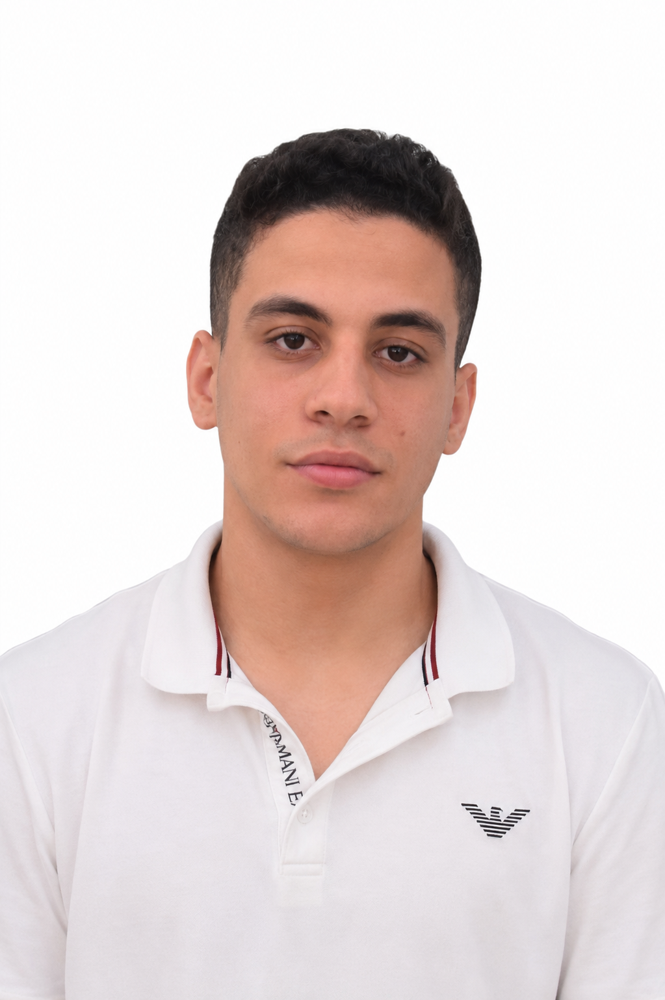

Omar Abdulaziz Mersal
Physical Therapist and Public FigureOmar Abdulaziz Abdel Latif Mersal is a physical therapist known for his passion for charitable work, active contributions, and continuous participation in charitable initiatives.
He is considered a prominent figure in Itay El Baroud, Beheira Governorate, where he dedicates his efforts to helping poor and needy people in his community and has strong relationships built on trust within his community.
- Profession: Physical Therapist
- Residence: Itay El Baroud, Beheira Governorate
- Interests: Charitable Work, Helping Those in Need, Community Service